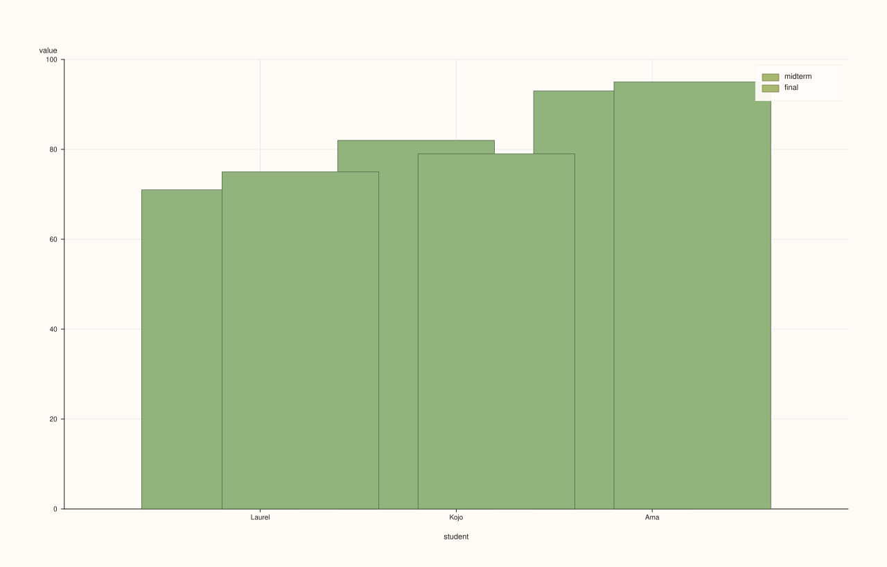
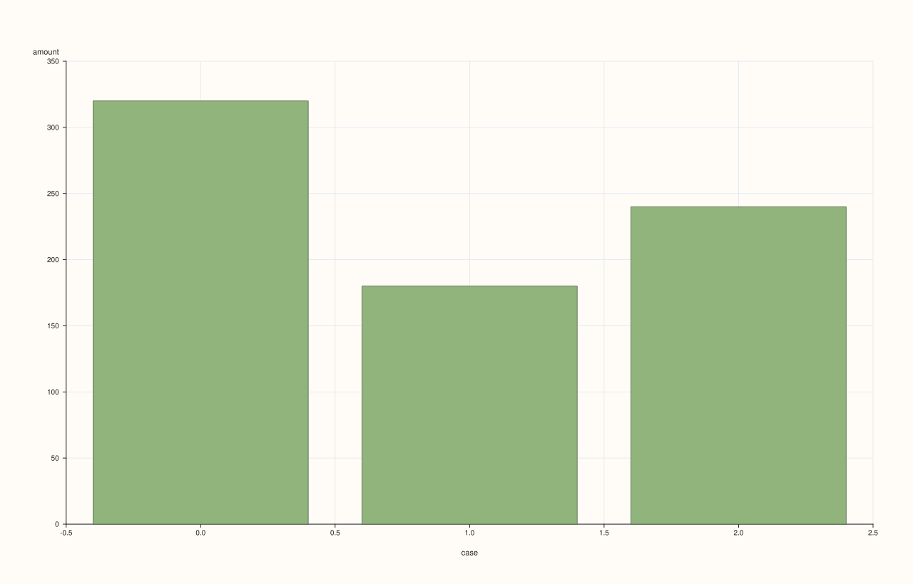
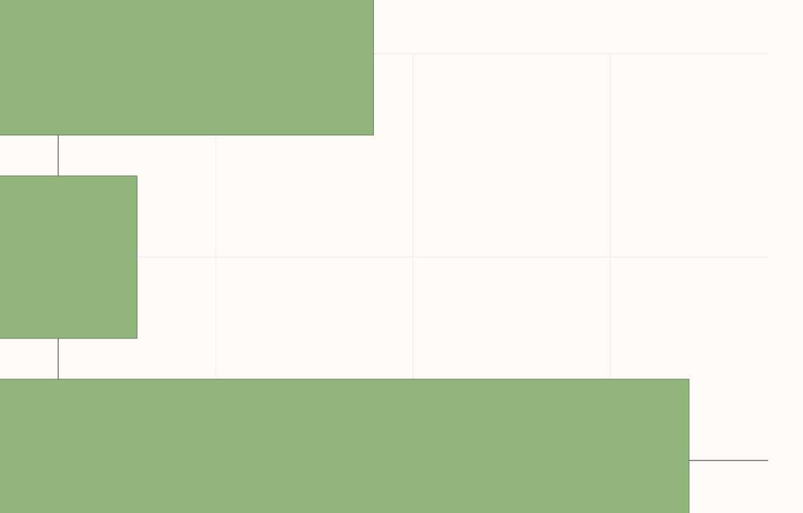
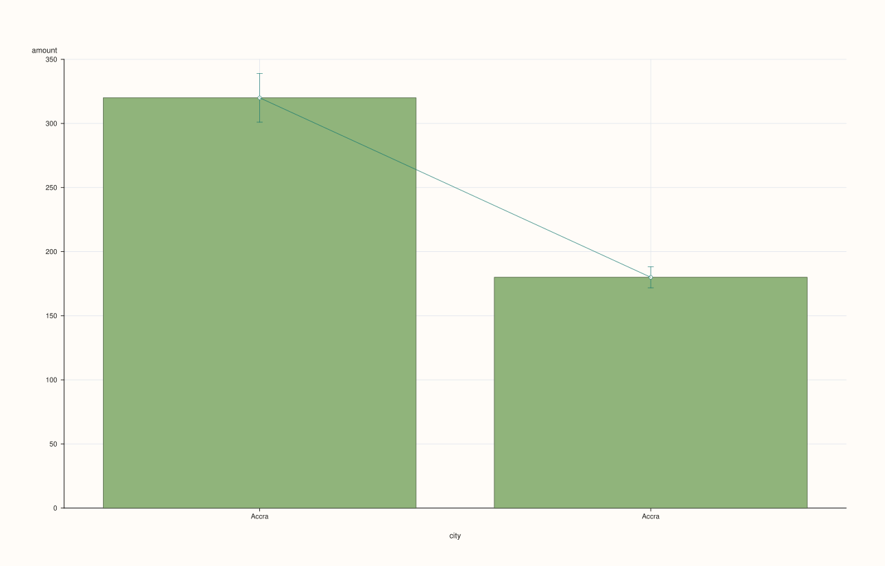

DataFramePlotAccessor::bar¶
Back to DataFramePlotAccessor API Reference
Signatures¶
DataFramePlotAccessor::bar(std::string_view y_feature,
std::optional<std::string_view> x_feature = std::nullopt) const -> pluss::pl::Studio
DataFramePlotAccessor::bar(std::string_view y_feature,
std::optional<std::string_view> x_feature,
const BarPlotOptions& options) const -> pluss::pl::Studio
DataFramePlotAccessor::bar(pluss::msharp::RangeView::Of<std::string_view> y_features,
std::optional<std::string_view> x_feature = std::nullopt) const -> pluss::pl::Studio
DataFramePlotAccessor::bar(pluss::msharp::RangeView::Of<std::string_view> y_features,
std::optional<std::string_view> x_feature,
const BarPlotOptions& options) const -> pluss::pl::Studio
DataFramePlotAccessor::bar(std::initializer_list<std::string_view> y_features,
std::optional<std::string_view> x_feature = std::nullopt) const -> pluss::pl::Studio
DataFramePlotAccessor::bar(std::initializer_list<std::string_view> y_features,
std::optional<std::string_view> x_feature,
const BarPlotOptions& options) const -> pluss::pl::Studio
What It Does¶
Draws one bar per row for a single y-feature, or grouped (side-by-side) bars per row
when several y-features are requested — each feature gets its own narrower bar sharing the
row’s axis position, rather than stacking (see bar_stacked() for the
accumulating variant). Same three overload families and x-axis-resolution rules as
line().
See line() for the shared x-axis-resolution rules and Studio-return / no-cout
mechanics.
Parameters¶
y_feature / y_features
One or more numeric features. A single feature draws one bar series; several draw
grouped bars sharing each axis position. At least one is required — an empty list
throws "DataFrame::plot().bar: at least one y feature is required".
x_feature (std::optional<std::string_view>, default std::nullopt)
Same three-step resolution as line() — falls back to the frame’s row
labels (titled "case") if omitted with no default set.
options (BarPlotOptions)
cpp struct BarPlotOptions { bool ci_enabled{false}; double ci_level{0.95}; bool horizontal{false}; XYAlignOptions align{}; };
horizontal = true swaps the chart’s orientation: bars extend along the x-axis instead
of the y-axis, and the category axis becomes the vertical one.
`ci_enabled = true` switches from "one bar per row" to **aggregated** bars: rows sharing
the same x-axis position (same category label, or same numeric x-value) are grouped,
each bar's height becomes the **mean** of that group, and a whisker/error-bar trace is
overlaid showing a normal-approximation confidence interval at `ci_level` (default
`0.95`, i.e. roughly ±1.96 standard errors). A group with only one row still draws a bar
(at that row's own value, as its "mean") but its whisker has zero width — there's no
variance to estimate from a single sample.
`align` is present but inert here — see [`line()`](line.md)'s note on the field.
Returns¶
pluss::pl::Studio
A figure with one pane containing one bar trace per y-feature (grouped side-by-side if
more than one), plus a whisker trace per y-feature when ci_enabled = true.
Examples¶
Example 1. A single feature, explicit categorical x-axis.
using namespace pluss::table;
auto sales = DataFrame({
{"city", Slate(pluss::make_note({"Accra", "Tema", "Kumasi"}))},
{"amount", Slate(pluss::make_series({320.0, 180.0, 240.0}))},
});
auto chart = sales.plot().bar("amount", "city");
chart.show();
One bar per city, no legend (single y-feature).

Example 2. Two y-features, grouped (side-by-side) bars sharing each x position.
auto exams = DataFrame({
{"student", Slate(pluss::make_note({"Laurel", "Kojo", "Ama"}))},
{"midterm", Slate(pluss::make_series({71.0, 82.0, 93.0}))},
{"final", Slate(pluss::make_series({75.0, 79.0, 95.0}))},
});
auto chart = exams.plot().bar({"midterm", "final"}, "student");
chart.show();
Each student gets two narrower bars side by side (midterm, final) instead of one — the
per-group bar width automatically shrinks to fit both within that student’s axis slot. A
legend labeled "midterm"/"final" is shown automatically.

Example 3. The same grouped call via a reusable RangeView.
std::vector<std::string_view> y_names{"midterm", "final"};
auto chart = exams.plot().bar(pluss::msharp::RangeView::Of<std::string_view>(y_names), "student");
chart.save_pdf("exams.pdf");

Example 4. No x_feature: falls back to the frame’s own row labels, exactly like every
other chart method on this accessor — see line()’s Example 3.
auto chart = sales.plot().bar("amount");

Example 5. horizontal = true — bars extend sideways, category axis runs vertically.
BarPlotOptions horizontal_options;
horizontal_options.horizontal = true;
auto chart = sales.plot().bar("amount", "city", horizontal_options);
chart.show();

Example 6. ci_enabled = true — rows sharing the same category are aggregated into a mean
bar with a confidence-interval whisker.
auto repeated = DataFrame({
{"city", Slate(pluss::make_note({"Accra", "Accra", "Accra", "Tema", "Tema"}))},
{"amount", Slate(pluss::make_series({300.0, 320.0, 340.0, 175.0, 185.0}))},
});
BarPlotOptions ci_options;
ci_options.ci_enabled = true;
ci_options.ci_level = 0.90;
auto chart = repeated.plot().bar("amount", "city", ci_options);
chart.show();
"Accra"’s three rows are aggregated into one bar at the mean of 300, 320, 340 = 320,
with a 90% confidence-interval whisker computed from those three samples; "Tema"’s two
rows aggregate to a bar at 180 with its own (wider, since fewer samples) whisker.

Notes¶
One y-feature draws a plain bar series; several draw grouped (not stacked) bars — see
bar_stacked()for stacking.horizontal = trueswaps which axis the bars extend along.ci_enabled = trueswitches to aggregated mean-plus-confidence-interval bars, grouping rows that share an x-axis position; a lone row in a group still bars at its own value with a zero-width whisker.Returns a
pluss::pl::Studio— seeline()’s important callout for how to view or save the result.
See Also¶
DataFramePlotAccessor::bar_stacked: the accumulating counterpart.DataFramePlotAccessor::line: the canonical explanation of this accessor’s shared mechanics.DataFramePlotAccessor::box/violin: distribution-shape summaries, an alternative toci_enabled’s mean-and-interval view.